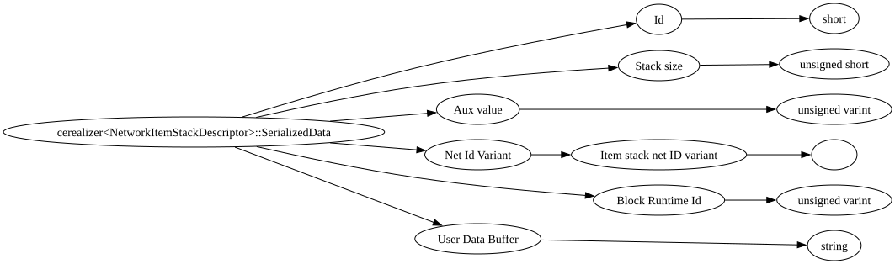

::SerializedData">| Field Name | Field Type | Field Constraints | Field Notes |
|---|---|---|---|
| Id | short | Send fixed Id of 0 for invalid item | |
| Stack size | unsigned short | <div style="padding-left: 0px;">Minimum = 0<br>Maximum = 64</div> | The number of items in the stack. Must be within the item's allowed stack size range. |
| Aux value | unsigned varint | <div style="padding-left: 0px;">Minimum = 0<br>Maximum = 32767</div> | Item auxiliary/metadata value. Used to distinguish item variants. Ignored for block items where aux is always 0. |
| Net Id Variant | ItemStackNetIdVariant | Optional network ID variant used to track item stack identity across client and server. | |
| Block Runtime Id | unsigned varint | <div style="padding-left: 0px;">Minimum = 0</div> | Runtime block state ID associated with this item when it represents a block. Used to identify the exact block state placed when the item is used. |
| User Data Buffer | string | The ItemInstanceUserData binary blob encoded as a String, so it's unsigned varint length prefixed. Get all your nbt+property bytes, calculate the length, write that length, THEN write the data. |